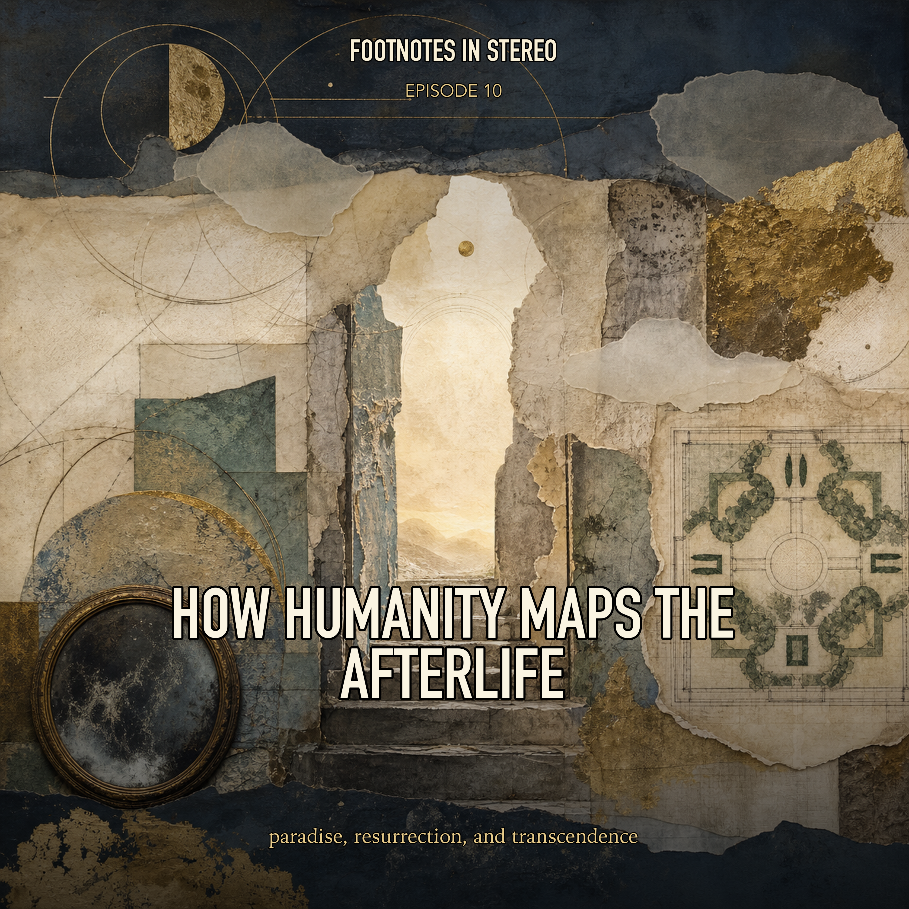

Episode 10 · Public episode
How Humanity Maps the Afterlife
What would have to persist for a person to have an afterlife: a soul, a body, a memory, a relationship, or something else entirely? Mira and Theo follow paradise, resurrection, dualism, materialism, divine justice, and the competing maps people have drawn beyond death. Created with Gemini Notebook.
Sources
Transcript
Machine transcript; lightly formatted and subject to correction.
Transcript processing. Check back shortly.